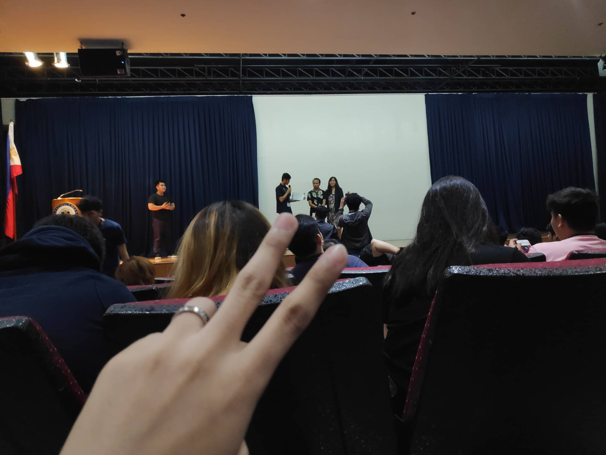

My experience on the first week of USERDES class was great. This is my first time taking the subject so I don’t have yet the knowledge or information what we are about to tackle in. I like the way Miss Jen talks about what is USERDES and gives us information what it is about. She makes us comfortable in many ways just to learn and make the best out of us. She let us bring our best and think critically in doing presentations to have a good work or make presentable to others. The tool we used in collaborating with my blockmate’s is Trello. Trello is very new to me, I don’t have yet experienced using it. Most of us don’t know to how to use it. We explore first about the website. Some of us are having fun while exploring trello like if one is changing the background all of us will have the same background, you can see the other cards or profiles, you can add stickers to your own card or to other people, you can see the history of activities. Miss Jen told us that it’s okay to explore first to learn new things about it. She makes do activity that tell about ourselves in a creative way. She tell us about our favorite app and show it to the class. Now she wants us to create our own user interface for a 1000th elevators. Our creative minds now show what we can do. Designing an elevator is very hard because you need to consider what are the surroundings, limitations, etc. We share the same ideas on what the elevator look like inside the class and collect the same ideas and have a conclusion about it. Designing something takes time because you have to put an effort and make it work before putting it on a test.
Second week in USERDES, we tackled about designing and creating an app that can help solve real life problems in our day to day life. Need finding is a process that we need to provide a solution on a problem. Having solutions on a problem is hard. Finding first what are the possible solutions for a specific problem. On our group, we think of an idea wherein we will create a feedback app for professors every after class so they can monitor what can be change in the way of their teaching and giving activities for the class. Teamwork is needed to accomplish a goal. It doesn’t mean everybody doing the same thing or everybody being able to do each other’s jobs. It’s more a means to a synergistic way of working, where the sum is greater than the parts. Properly managed, teamwork maximizes strengths, bringing out the best in each team member, a key theme on this site.
On the 3rd week of User Design class, we’re given a task to create a personal website using HTML and CSS. I have a little background about this when I was high school. I don’t remember any how to do a website. That’s why I have hard time doing the task so watch some on youtube how to do it. Github is one of the most used git version control repository servers. We’ve been using Github on our subject Mobile Programming. It’s good for hosting codes. When I was new at this, the function and purpose of the commit changes are a bit of confusing because I can’t find the buttons, but with the help of my classmates, I’ve can use it properly. Also, it makes a little harder to use because of no search button on repositories. Heroku is very confusing at first, but I ask for assistance from classmate how to connect to github. It was really easy when they taught me how to do it.
Click here for my first web!Userinyerface is a unique quiz we’ve done on our course because you need to use your common sense, patience and logic thinking. On my first try, it took me 19 minutes before figuring out because it’s not a typical user interface you see on the internet. I got stuck on filling up personal information because I don’t know what I will input. I got annoyed and mostly give-up but we need to finish it on time. After my first try, I try it again and I finished it in 2mins up. You just need to be calm to think carefully and analyze it. Designing a user interface is hard because it needs to be user-friendly as possible. Messy/Bad designing can lead to confusions and frustration like this one. It can make an impact on you and the user because all your effort can be nothing.
Well, my SOCITFEST experience it’s not quite fun compare to last year. Few students only participated on any events not like last year events. What I like the most on any events is the Mobile Legends and Tekken tournament. The whole venue was loud and the participants are very competitive with each other. My expectations for the next SOCIT fest students should participate more like when we are first year and have more events to come for every organization.
My experience on USERDES class is great because it’s my first time on creating UI/UX for a website. The challenges I have encountered is how to the design the UI for my website and trying to code it. It’s very hard to concept a website because you need to canvass first what the website would look like. Will it be user friendly to the people or user? Would it be easy to navigate the page? You’ll need to think of a design that would be easier for the user to understand about the website. I’m expecting on finals that will tackle more ideas about good design should be and have more ideas about it. We take quiz using kahoot and had so much fun with the class. Being competitive to each other.